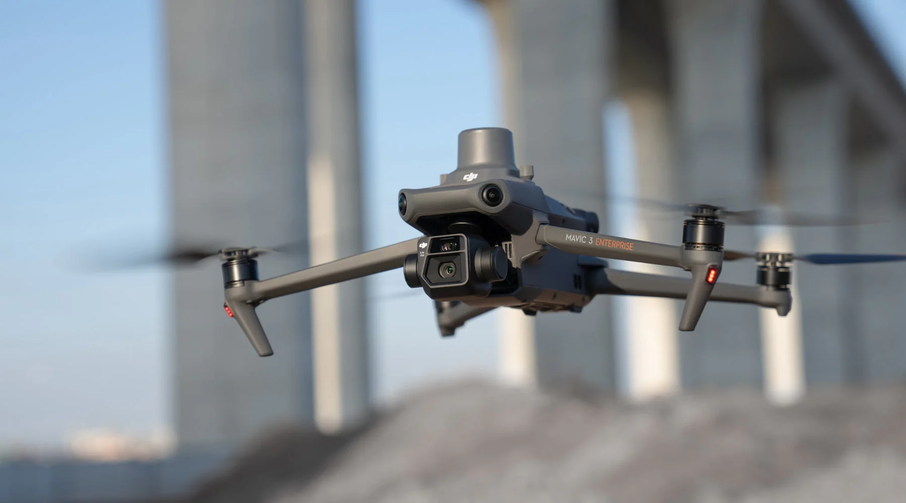

Drone mapping voor nauwkeurige terreinanalyses, 3D modellen en volumemetingen.
In een wereld waar data het nieuwe goud is, bieden wij u de ultieme vogelvlucht. Fotogrammetrie is veel meer dan alleen een foto van bovenaf; het is de kunst van het omzetten van beeld in meetbare intelligentie. Door honderden overlappende hogeresolutiefoto’s te combineren, creëren wij een 'Digital Twin' van de werkelijkheid.
Onze drones zijn uitgerust met de nieuwste sensoren om nauwkeurigheid tot op de centimeter te garanderen. Waar vroeger landmeters dagenlang op het terrein stonden, leveren wij sneller en veiliger een compleet digitaal dossier aan.
Klaar om uw project vanuit een nieuw perspectief te analyseren? Plan een adviesgesprek in en ontdek onze mapping-oplossingen.
WhatsApp: +32 476 17 09 07
Mail: sales@nexsocom.com